ART DIRECTION / V4SHUTDOWN
Painted industrial thriller. Petrol enamel, warm work lights, ivory signage, and mustard workwear. Generated concept artwork—not screenshots of the current game. Crew rescue and Overseer Mode are proposed features.
Generation prompts and reference direction
01 / Title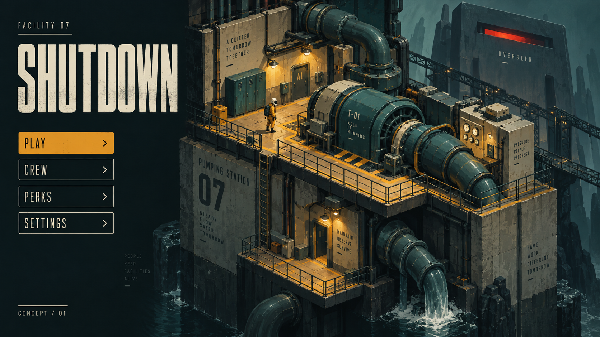
02 / Microphone calibration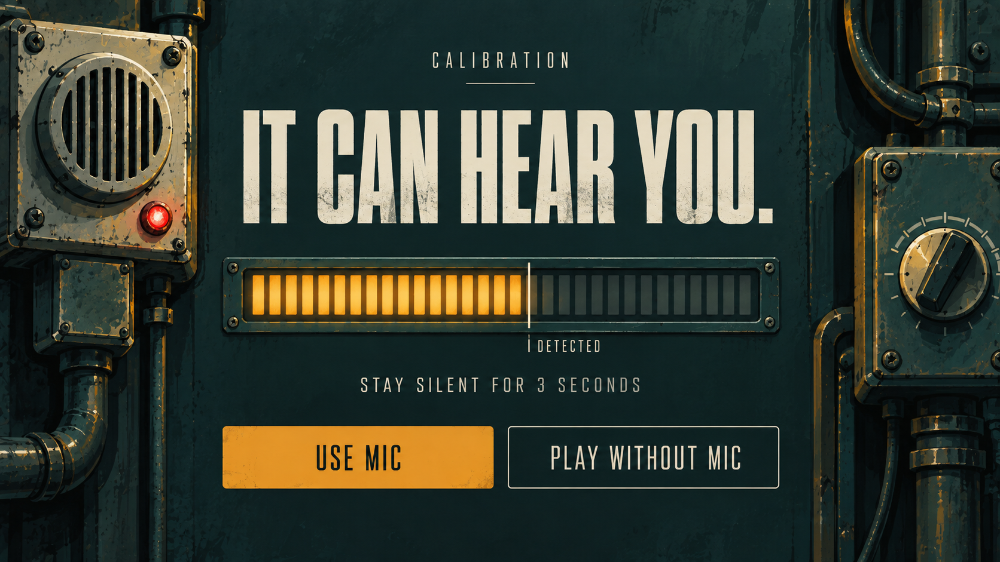
03 / Sector selection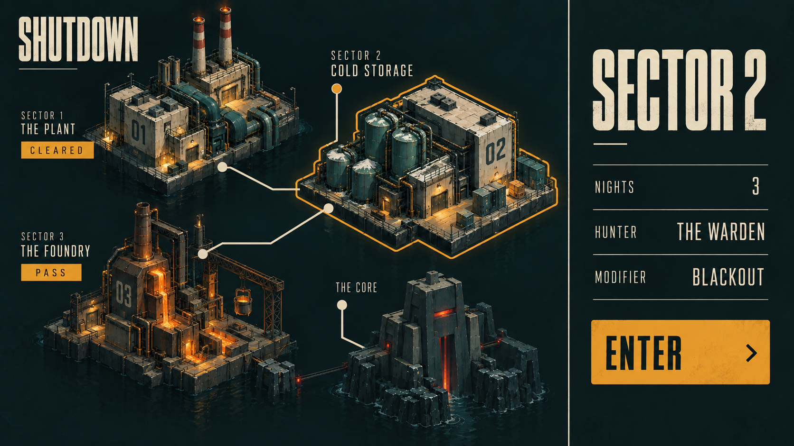
04 / Operator loadout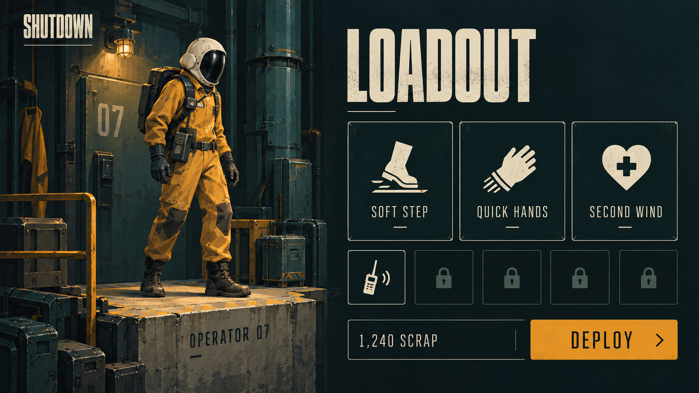
05 / Shifting facility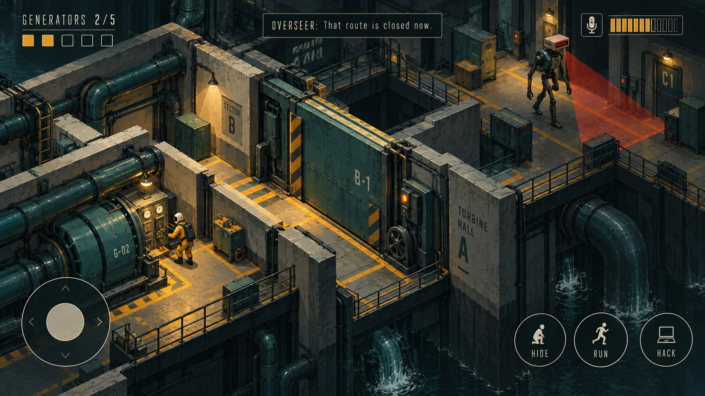
06 / Inside the locker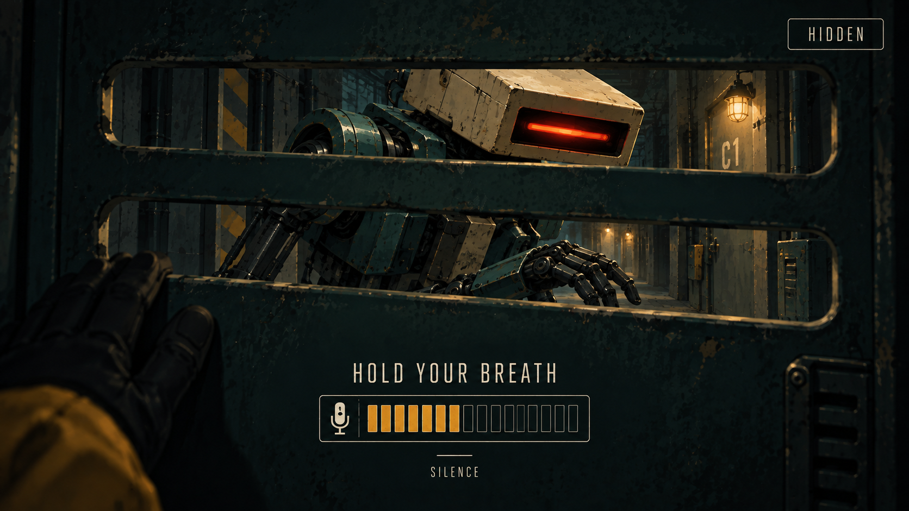
07 / Crew rescue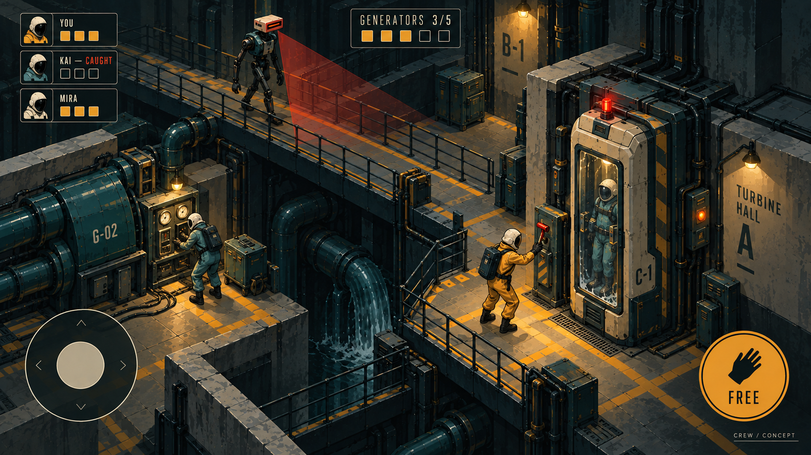
08 / The Core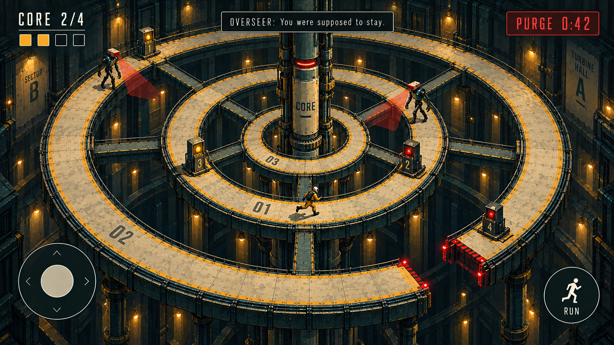
09 / Results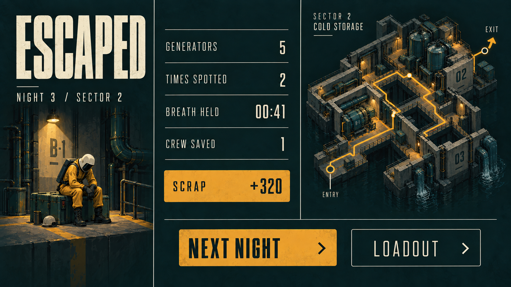
10 / Foundry expansion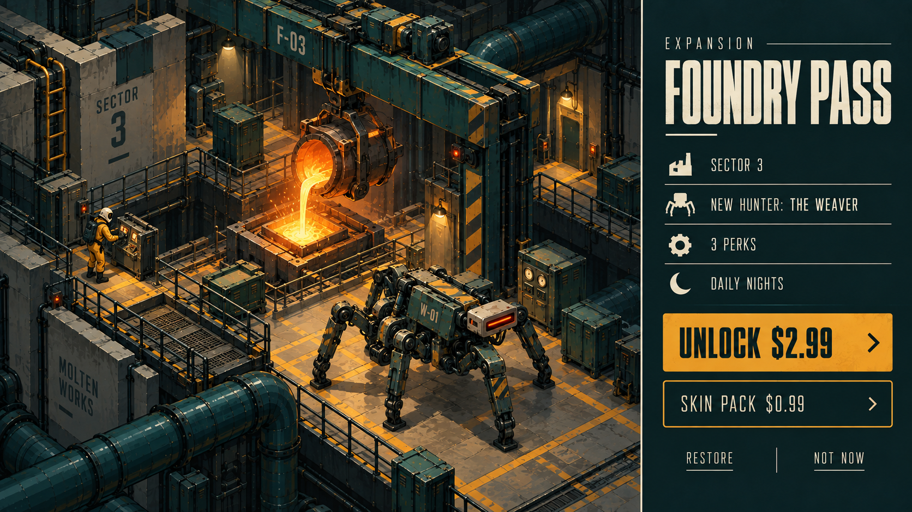
11 / Overseer Mode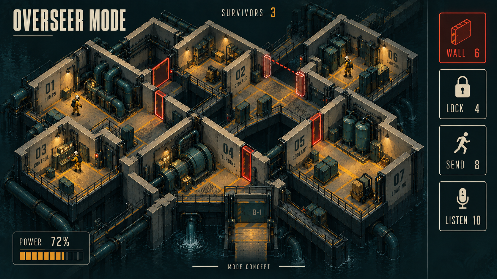